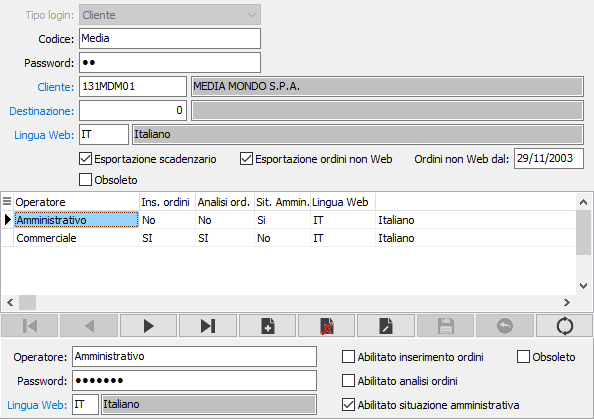

Utenti B2B
La tabella consente di codificare gli utenti che possono accedere all'area eCommerce B2B sul web.

TIPO LOGIN: campo non attivo per il modulo eCommerce B2B (business to business).
CODICE: codice assegnato per la connessione all'area eCommerce sul web. Sul campo sono attive le funzioni di ricerca (F9) sulla tabella stessa.
PASSWORD: il campo contiene la password utilizzata dall'utente per la connessione all'area eCommerce sul web.
CLIENTE: codice del cliente, presente in anagrafica, al quale saranno intestati gli ordini inseriti dal web in OS1. Sul campo sono attive le funzioni di ricerca (F9) sulla tabella stessa.
DESTINAZIONE: eventuale codice della destinazione, associata al cliente, da utilizzare per la compilazione degli ordini inseriti dal web in OS1. Sul campo sono attive le funzioni di ricerca (F9) sulla tabella stessa.
LINGUA WEB: codice della lingua da utilizzare nell'area eCommerce sul web. Sul campo sono attive le funzioni di ricerca (F9) sulla tabella stessa.
ESPORTAZIONE SCADENZARIO: definisce se deve essere visibile, nell'area eCommerce del web, la situazione delle scadenze in essere (casella con segno di spunta).
ESPORTAZIONE ORDINI NON WEB: definisce se devono essere visibile, nell'area eCommerce del web, anche gli ordini non derivanti dal web in essere (casella con segno di spunta).
ORDINI NON WEB DAL: es attivo il campo precedente indica la data a partire dalla quale saranno visualizzati, nell'area eCommerce del web, gli ordini non derivanti dal web.
OBSOLETO: flag attivabile dall’utente per inibire il possibile utilizzo dell’elemento di tabella in esame nelle successive transazioni.
Nel caso in cui sia stata attivata la gestione degli operatori sarà utilizzata anche la sezione inferiore della finestra per inserire i dati degli operatori in grado di accedere all'area eCommerce del web e le modalità di accesso.
OPERATORE: codice assegnato per la connessione all'area eCommerce sul web. Sul campo sono attive le funzioni di ricerca (F9) sulla tabella stessa.
PASSWORD: il campo contiene la password utilizzata dall'operatore per la connessione all'area eCommerce sul web.
LINGUA WEB: codice della lingua da utilizzare per l'operatore nell'area eCommerce sul web. Sul campo sono attive le funzioni di ricerca (F9) sulla tabella stessa.
ABILITATO INSERIMENTO ORDINI: definisce se l'operatore può inserire nuovi ordini dall'area eCommerce del web (casella con segno di spunta).
ABILITATO ANALISI ORDINI: definisce se l'operatore può visualizzare la situazione ordini dall'area eCommerce del web (casella con segno di spunta).
ABILITATO SITUAZIONE AMMINISTRATIVA: definisce se l'operatore può analizzare la situazione amministrativa dall'area eCommerce del web (casella con segno di spunta).
OBSOLETO: flag attivabile dall’utente per inibire il possibile utilizzo dell’elemento di tabella in esame nelle successive transazioni.